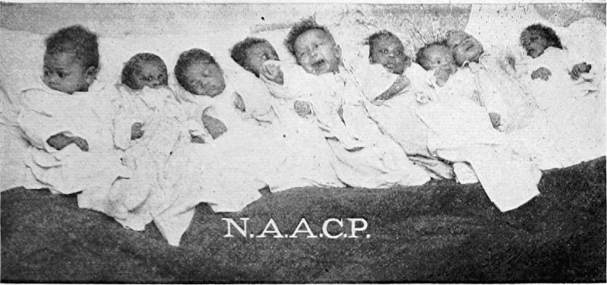
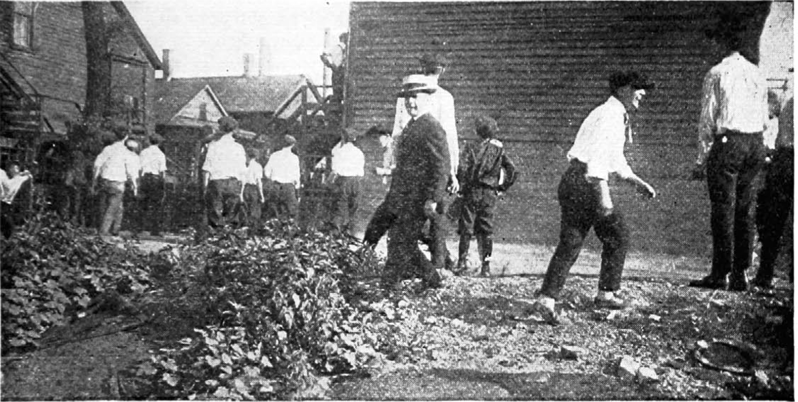

Chicago and Its Eight Reasons (1919)
Chicago and Its Eight Reasons (1919)

Many causes have been assigned for the three days of race rioting, from July 27 to 30 in Chicago, each touching some particular phase of the general condition that led up to the outbreak. Labor union officials attribute it to the action of the packers, while the packers are equally sure that the unions themselves are directly responsible. The city administration feels that the riots were brought on to discredit the Thompson forces, while leaders of the anti-Thompson forces, prominent among them being State’s Attorney Maclay Hoyne, are sure that the administration is directly responsible. In this manner charges and counter-charges are made, but, as is usually the case, the Negro is made to bear the brunt of it all—to be “the scapegoat.” A background of strained race relations brought to a head more rapidly through political corruption, economic competition and clashes due to the overflow of the greatly increased colored population into sections outside of the so-called “Black Belt,” embracing the Second and Third Wards, all of these contributed, aided by magnifying of Negro crime by newspapers, the the formation of a situation where only a spark was needed to ignite the flames of racial antagonism. That spark was contributed by a white youth when he knocked a colored lad off a raft at the 29th Street bathing beach and the colored boy was drowned.
Four weeks spent in studying the situation in Chicago, immediately following the outbreaks, seem to show at least eight general causes for the riots, and the same conditions, to a greater or less degree, can be found in almost every large city with an appreciable Negro population. These causes, taken after a careful study in order of their prominence, are:
Race Prejudice.
Economic Competition.
Political Corruption and Exploitation of Negro Voters.
Police Inefficiency.
Newspaper Lies about Negro Crime
Unpunished Crimes Against Negroes.
Housing.
Reaction of Whites and Negroes from War.
Some of these can be grouped under the same headings, but due to the prominence of each they are listed as separate causes.
Prior to 1915, Chicago had been famous for its remarkably fair attitude toward colored citizens. Since that time, when the migratory movement from the South assumed large proportions, the situation has steadily grown more and more tense. This was due in part to the introduction of many Negroes who were unfamiliar with city ways and could not, naturally, adapt themselves immediately to their new environment. Outside of a few sporadic attempts, little was done to teach them the rudimentary principles of sanitation, of conduct or of their new status as citizens under a system different from that in the South. During their period of absorption into the new life, their care-free, at times irresponsible and sometimes even boisterous, conduct caused complications difficult to adjust. But equally important, though seldom considered, is the fact that many Southern whites have also come into the North, many of them to Chicago, drawn by the same economic advantages that attracted the colored workman. The exact figure is unknown, but it is estimated by men who should know that fully 20,000 of them are in Chicago. These have spread the virus o” race hatred and evidences of it can be seen in Chicago on every hand. This same cause underlies each of the other seven causes.

With regard to economic competition, the age-long dispute between capital and labor enters. Large numbers of Negroes were brought from the South by the packers and there is little doubt that this was done in part so that the Negro might be used as a club over the heads of the unions. John Fitzpatrick and Ed Nockels, president and secretary, respectively, of the Chicago Federation of Labor, and William Buck, editor of the New Majority, a labor organ, openly charge that the packers subsidized colored ministers, politicians and Y. M. C. A. secretaries to prevent the colored workmen at the stockyards from entering the unions. On the other hand, the Negro workman is not at all sure as to the sincerity of the unions themselves. The Negro in Chicago yet remembers the waiters’ strike some years ago, when colored union workers walked out at the command of the unions and when the strike was settled, the unions did not insist that Negro waiters be given their jobs back along with whites, and, as a result, colored men have never been able to get back into some of the hotels even to the present day. The Negro is between “the devil and the deep blue sea.” He feels that if he goes into the unions, he will lose the friendship of the employers. He knows that if he does not, he is going to be met with the bitter antagonism of the unions. With the exception of statements made by organizers, who cannot be held to accountability because of their minor official connection, no statements have been made by the local union leaders, outside of high sounding, but meaningless, protestations of friendship for the Negro worker. He feels that he has been given promises too long already. In fact, he is “fed up” on them. What he wants are binding statements and guarantees that cannot be broken at will.
With the possible exception of Philadelphia, there is probably no city in America with more of political trickery, chicanery and exploitation than Chicago. Against the united and bitter opposition of every daily newspaper in Chicago, William Hale Thompson was elected again as mayor, due, as was claimed, to the Negro and German vote. While it is not possible to state that the anti-Thompson element deliberately brought on the riots, yet it is safe to say that they were not averse to its coming. The possibility of such a clash was seen many months before it actually occurred, yet no steps were taken to prevent it. The purpose of this was to secure a two-fold result. First, it would alienate the Negro set from Thompson through a belief that was expected to grow among the colored vote when it was seen that the police force under the direction of the mayor was unable or unwilling to protect the colored people from assault by mobs. Secondly, it would discourage the Negroes from registering and voting and thus eliminate the powerful Negro vote in Chicago. Whether or not this results remains to be seen. In talking with a prominent colored citizen of Chicago, asking why the Negroes supported Thompson so unitedly, his very significant reply was:
The Negro in Chicago, as in every other part of America, is fighting for the fundamental rights of citizenship. If a candidate for office is wrong on every other public question except this, the Negroes are going to vote for that man, for that is their only way of securing the things they want and that are denied them.
The value of the Negro vote to Thompson can be seen in a glance at the recent election figures. His plurality was 28,000 votes. In the second ward it was 14,000 and in the third, 10,000. The second and third wards constitute most of what is known as the “Black Belt.”
The fourth contributing cause was the woeful inefficiency and criminal negligence of the police authorities of Chicago, both prior to and during the riots. Prostitution, gambling and the illicit sale of whisky flourish openly and apparently without any fear whatever of police interference.
In a most dangerous statement, State’s Attorney Maclay Hoyne, on August 25, declared that the riots were due solely to vice in the second ward. He seemed either to forget or to ignore the flagrant disregard of law and order and even of the common principles of decency in city management existing in many other sections of the city.
All of this tended to contribute to open disregard for law and almost contempt for it. Due either to political “pull” or to reciprocal arrangements, many notorious dives run and policemen are afraid to arrest the proprietors.
During the riots the conduct of the police force as a whole was equally open to criticism. State’s Attorney Hoyne openly charged the police with arresting colored rioters and with an unwillingness to arrest white rioters. Those who were arrested were at once released. In one case a colored man who was fair enough to appear to be white was arrested for carrying concealed weapons, together with five white men and a number of colored men. All were taken to a police station; the light colored man and the five whites being put into one cell and the other colored men in another. In a few minutes the light colored man and the five whites were released and their ammunition given back to them with the remark, You’ll probably need this before the night is over.”
Fifth on the list is the effect of newspaper publicity concerning Negro crime. With the exception of the Daily News, all of the papers of Chicago have played up in prominent style with glaring, prejudice-breeding headlines every crime or suspected crime committed by Negroes. Headlines such as “NEGRO BRUTALLY MURDERS PROMINENT CITIZEN,” “NEGRO ROBS HOUSE” and the like have appeared with alarming frequency and the news articles beneath such headlines have been of the same sort. During the rioting such headlines as “NEGRO BANDITS TERRORIZE TOWN,” “RIOTERS BURN 100 HOMES—NEGROES SUSPECTED OF HAVING PLOTTED BLAZE” appeared. In the latter case a story was told of witnesses seeing Negroes in automobiles applying torches and fleeing. This was the story given to the press by Fire Attorney John R. McCabe after a casual and hasty survey. Later the office of State Fire Marshall Gamber proved conclusively that the fires were not caused by Negroes, but by whites. As can easily be seen such newspaper accounts did not tend to lessen the bitterness of feeling between the conflicting groups. Further, many wild and unfounded rumors were published in the press—incendiary and inflammatory to the highest degree, a few of them being given below in order to show their nature. Some are:
- Over 1,000 Negroes had been slain and their bodies thrown in "Bubbly Creek" and the Chicago River.
- A Negro had been lynched and hanged from a "Loop" building overlooking Madison Street.
- A white woman had been attacked and mutilated by a Negro on State Street. A Negro woman had been slain, her breasts cut off and her infant had been killed by having its brains dashed out against a wall.
- A white child had been outraged by a colored man.
- A white child had been kidnapped by a band of colored men and its body later found, badly mutilated and dismembered.
Immediately following the riots, a white woman was murdered in Evanston, Ill. Immediately the crime was laid at the door of a colored man with whom the woman had been intimate a number of years. Pitiful stories were told of the woman waiting fr hours on street corners for “just one look at her Billiken-like, mulatto lover,” played up under headlines such as “CONFESSION EXPECTED TODAY FROM NEGRO SUSPECT,” “NEGRO SUSPECT RAPIDLY WEAKENING” and the like which clearly led one to believe that the colored man was guilty. A few days later, in an obscure item on an inside page, a short account was given of the release of the colored suspect “because insufficient evidence to hold him” existed. A long period of such publicity had inflamed the minds of many people against Negroes who otherwise would have been unprejudiced. Much of the blame for the riots can be laid to such sources.
For a long period prior to the riots, organized gangs of white hoodlums had been perpetrating crimes against Negroes for which no arrests had been made. These gangs in many instances masqueraded under the name of “Athletic and Social Clubs” and later direct connection was shown between them and incendiary fires started during the riots. Colored men, women and children had been beaten in the parks, most of them in Jackson and Lincoln Parks. In one case a young colored girl was beaten and thrown into a lagoon. In other cases Negroes were beaten so severely that they had to be taken to hospitals. All of these cases had caused many colored people to wonder if they could expect any protection whatever from the authorities. Particularly vicious in their attacks was an organization known locally as “Regan’s Colts.”
Much has been written and said concerning the housing situation in Chicago and its effect on the racial situation. The problem is a simple one. Since 1915 the colored population of Chicago has more than doubled, increasing in four years from a little over 50,000 to what is now estimated to be between 125,000 and 150,000. Most of them lived in the area bounded by the railroad on the west, 30th Street on the north, 40th Street on the south and Ellis Avenue on east. Already overcrowded this so-called “Black Belt” could not possibly hold the doubled colored population. One cannot put ten gallons of water in a five-gallon pail. Although many Negroes had been living in “white” neighborhoods, the increased exodus from the old areas created an hysterical group of persons who formed “Property Owners’ Associations” for the purpose of keeping intact white neighborhoods. Prominent among these was the Kenwood-Hyde Park Property Owners’ Improvement Association, as well as the Park Manor Improvement Association. Early in June the writer, while in Chicago, attended a private meeting of the first named at the Kenwood Club House, at Lake Park Avenue and 47th Street. Various plans were discussed for keeping the Negroes in “their part of the town,” such as securing the discharge of colored persons from positions they held when they attempted to move into “white” neighborhoods, purchasing mortgages of Negroes buying homes and ejecting them when mortgage notes fell due and were unpaid, and many more of the same caliber. The language of many speakers was vicious and strongly prejudicial and had the distinct effect of creating race bitterness.
In a number of cases during the period from January, 1918, to August, 1919, there were bombings of colored homes and houses occupied by Negroes outside of the “Black Belt.” During this period no less than twenty bombings took place, yet only two persons have been arrested and neither of the two has been convicted, both cases being continued.
Finally, the new spirit aroused in Negroes by their war experiences enters into the problem. From Local Board No. 4, embracing the neighborhood in the vicinity of State and 35th Streets, containing over 30,000 inhabitants of which fully ninety per cent are colored, over 9,000 men registered uandad 1,850 went to camp. These men, with their new outlook on life, injected the same spirit of independence into their companions, a thing that is true of many other sections of America. One of the greatest surprises to many of those who came down to “clean out the n⸺s” is that these same “n⸺s” fought back. Colored men saw their own kind being killed, heard of many more and believed that their live; and liberty were at stake. In such a spirit most of the fighting was done.

The “Infuriated” White Mob in Chicago
Citation: White, Walter F. 1919. “Chicago and Its Eight Reasons.” The Crisis. 18(6):293–297.